Contents
Segmentacion Watershed usando marcadores
1. Calcular una funcion de segmentacion. Es una imagen cuyas regiones oscuras son los objetos que tratamos de identificar
2. Calcular los marcadores de los objetos. Son pequeñas zonas conexas dentro de cada objeto.
3. Calcular los marcadores del fondo. Son pixels que no pertenecen a ningún objeto
4. Modificar la funcion de segmentacion para que son tenga minimos en los marcadores de fondo y objeto.
5. Calcular la transformada watershed
% Leer la imagen I = imread('Tuto_1.bmp'); figure; imshow(I); title('Imagen original')
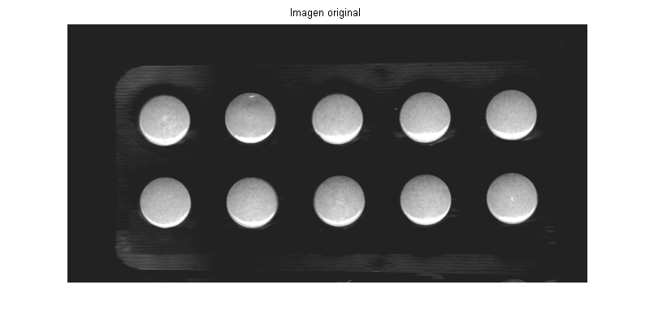
Usar la magnitud del gradiente como funcion de segmentacion
% kernel del filtro de soble para detectar contorno horizontales hy = fspecial('sobel'); % kernel para contornos verticales hx = hy'; % filtramos la imagen Iy = imfilter(double(I), hy, 'replicate'); % filtramos la imagen Ix = imfilter(double(I), hx, 'replicate'); % calculamos la magnitud del gradiente gradmag = sqrt(Ix.^2 + Iy.^2); figure, imshow(gradmag,[]), title('Magnitud del gradiente')
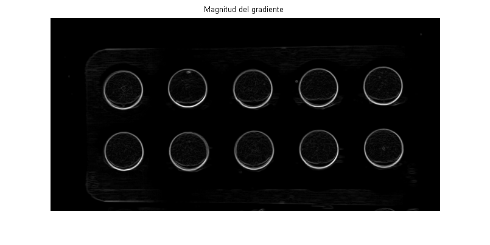
Aplicamos el algoritmo de segmentacion directamente a la imagen
L = watershed(gradmag); % pasamos de etiquetas a falso color Lrgb = label2rgb(L); figure, imshow(Lrgb), title('Transformada watershed sobre la imagen del gradiente')
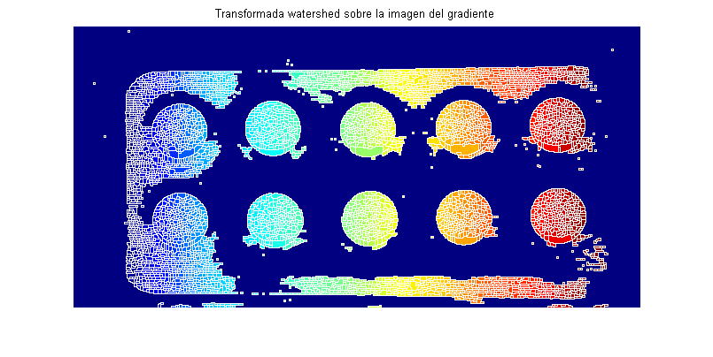
Marcamos los objetos de interes
Se pueden aplicar muchos procedimientos. En este caso utilizaremos técnicas basadas en filtros morfologicos. El objetivo es crear zonas planas de maximos dentro de cada objeto para que puedan ser facilmente localizados.
Aplicamos el filtro de apertura a la imagen original
se = strel('disk', 20); Io = imopen(I, se); figure, imshow(Io), title('Apertura') % Aplicamos un filtro de erosion Ie = imerode(I, se); % aplicamos un filtro morfologico de reconstruccion. Mediante sucesivas % dilataciones de la imagen erosionada Iobr = imreconstruct(Ie, I); figure, imshow(Iobr), title('Apertura por reconstruccion')
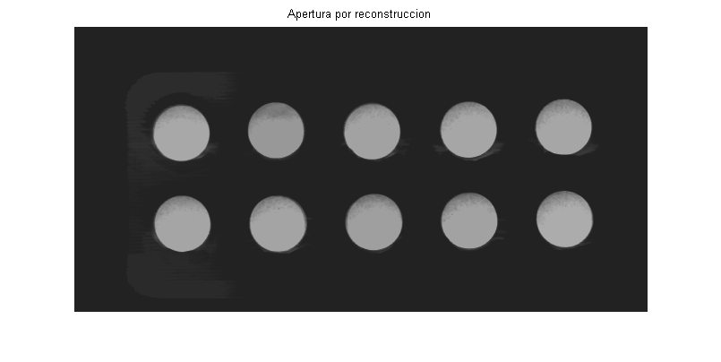
Aplicamos una operacion de cierre sobre la imagen en la que habiamos practicado la apertura
Ioc = imclose(Io, se); figure, imshow(Ioc), title('Apertura y cierre de la imagen') % Comparamos el resultado con la aplicacion de un filtro de reconstruccion % dilatamos la imagen abierta por reconstruccion Iobrd = imdilate(Iobr, se); % aplicamos el filtro de reconstruccion. Observese que trabajamos con el % complemento del imagen Iobrcbr = imreconstruct(imcomplement(Iobrd), imcomplement(Iobr)); % complementamos de nuevo el resultado anterior para volver a la escala % original Iobrcbr = imcomplement(Iobrcbr); figure, imshow(Iobrcbr), title('Apertura y cierre por reconstruccion')
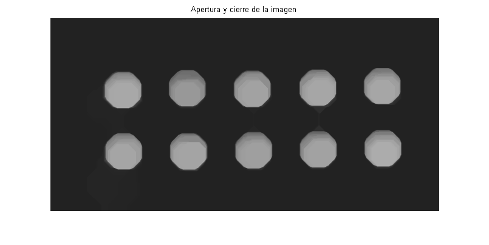
El segundo procedimiento es más efectivo para eliminar pequeños defectos sin alterar la forma de los objetos. El siguiente paso es calcular los maximos regionales, con lo que tendremos los marcadores de los objetos
fgm = imregionalmax(Iobrcbr);
figure, imshow(fgm), title('Marcadores obtenidos para los objetos')
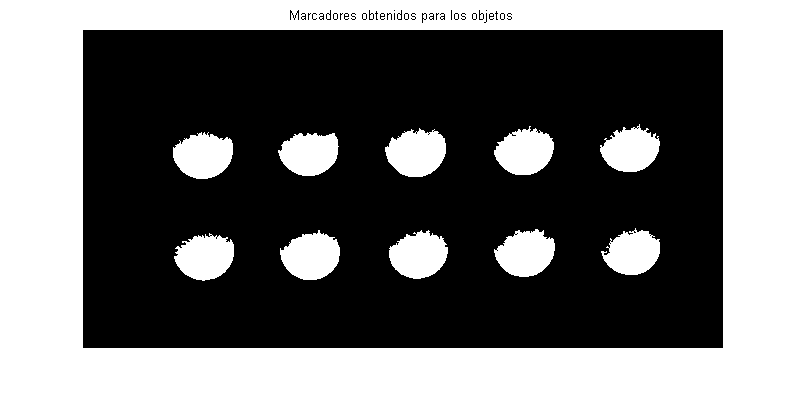
Superponemos los marcadores a la imagen original para interpretar el resultado (observese que fmg es una imagen binaria)
I2 = I;
I2(fgm) = 255;
figure, imshow(I2), title('marcadores sobre la imagen inicial')
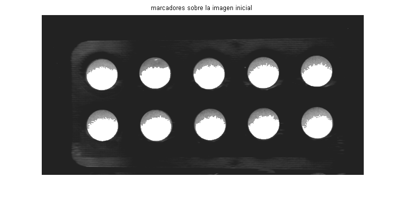
Algunos marcadores llegan hasta el contorno del objeto. Aplicamos un filtro de cierre y uno de erosion para evitar este problema
se2 = strel(ones(5,5)); fgm2 = imclose(fgm, se2); fgm3 = imerode(fgm2, se2); % Como pueden quedar pixels sueltos, eliminamos aquellos bloques que no % alcancen un area minima, en el ejemplo 20 pixels fgm4 = bwareaopen(fgm3, 20); I3 = I; I3(fgm4) = 255; figure, imshow(I3); title('Marcadores modificados sobre la imagen original')
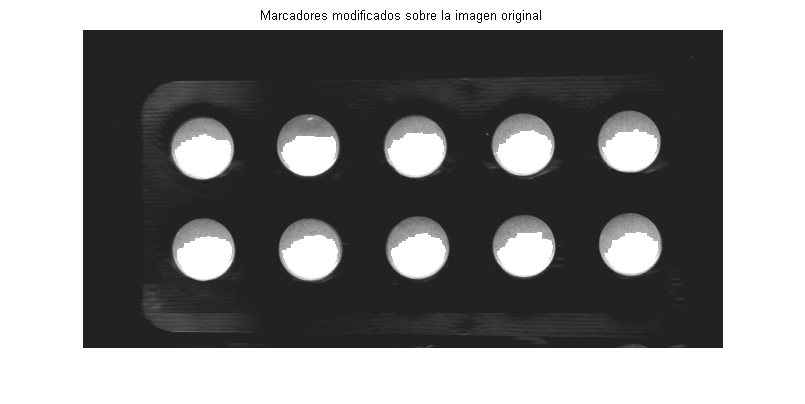
Calculo de los marcadores del fondo
En la imagen obtenida tras la apertura y cierre por reconstruccion, los pixels mas oscuros pertenecen al fondo, asi que empezamos directamente con dicha imagen
% hacemos una binarizacion bw = im2bw(Iobrcbr, graythresh(Iobrcbr)); figure, imshow(Iobrcbr), title('Imagen reconstruida'); figure, imshow(bw), title('Binarizacion de la imagen reconstruida')
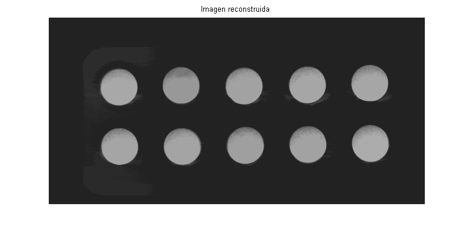
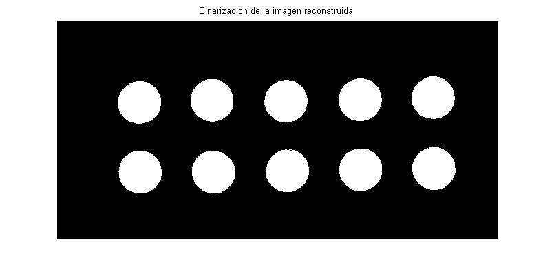
No interesa que los marcadores del fondo puedan tocar los contornos de los objetos. Como estos marcadores nos interesa que sean muy finos, calcuremos la transformacion de distancia, aplicaremos la transformacion watershed a dicho resultado y nos quedaremos con las divisorias
D = bwdist(bw); DL = watershed(D); bgm = DL == 0; figure, imshow(D), title('transformada de distancia') figure, imshow(DL), title('resultado de aplicar watershed') figure, imshow(bgm), title('puntos usados como marcadores del fondo')
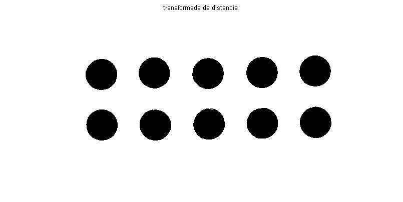
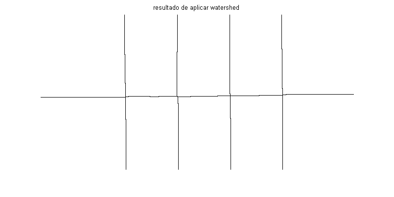
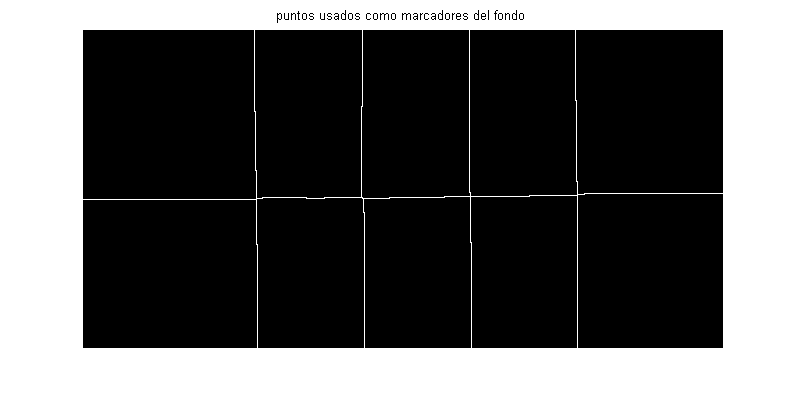
Calcular la transformada watershed
Imponenmos valores minimos en las zonas de la imagen de gradientes correspondientes a los marcadores. Observese que al ser estos imagenes binarias, usamos el operador o-logico para hacer la suma.
gradmag2 = imimposemin(gradmag, bgm | fgm4); figure, imshow(gradmag2), title('gradiente con los marcadores') % Hacemos la segmentacion L = watershed(gradmag2);
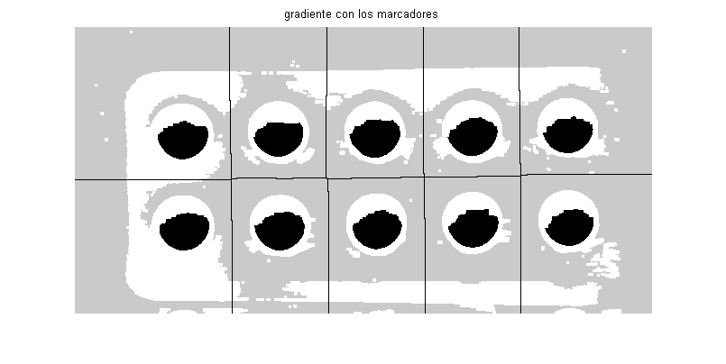
Visualizar el resultado
Las froteras de los objetos se corresponden con los valores de L==0. Superponemos a la imagen original los marcadores y las lineas divisorias dilatadas para facilitar su visualizacion
I4 = I; I4(imdilate(L == 0, ones(3, 3)) | bgm | fgm4) = 255; figure, imshow(I4), title('marcadores y divisorias sobre la imagen original'); % visualizacion de las etiquetas en falso color Lrgb = label2rgb(L, 'jet', 'w', 'shuffle'); figure, imshow(Lrgb), title('Etiquetas en falso color') % Superposicion de ambas imagenes usando transparencias figure, imshow(I), hold on himage = imshow(Lrgb); set(himage, 'AlphaData', 0.3); title('Supeposicion de las etiquetas sobre la imagen original')
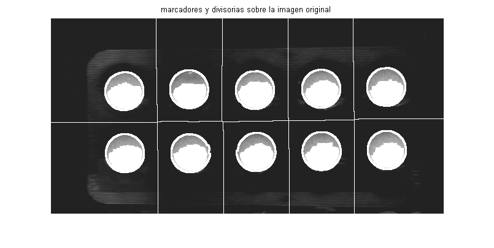
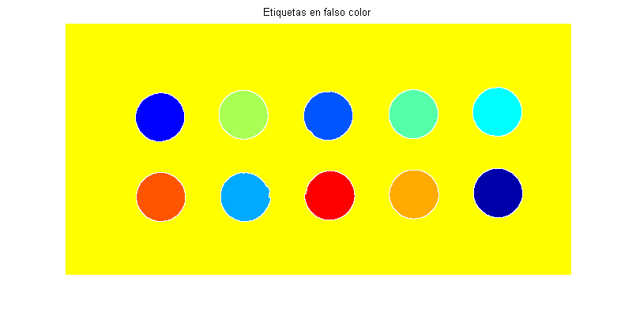
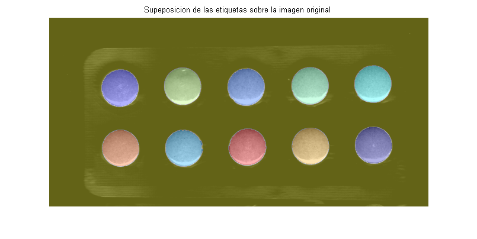